If Open Source Isn't Sustainable, Maybe Software Freedom Is?
Bradley M. Kuhn
SCALE 2019
Sunday 10 March 2019
Sustainability?
SUSTAINABILITY
Sustainability?
sustainability /səˌstānəˈbilədē/ (n) — avoidance of the depletion of natural resources in order to maintain an ecological balance.
(from Google's proprietary dictionary)
Sustainability?
Sustainability is the process of maintaining change in a balanced environment, in which the exploitation of resources, the direction of investments, the orientation of technological development and institutional change are all in harmony and enhance both current and future potential to meet human needs and aspirations.
(from Wikipedia)
FOSS Sustainability?
I first heard about Free and Open Source Software (FOSS) Sustainability about five years ago
My first thought…
FOSS For Environmental Sustainability
Great news, I thought, people are working to writing software to help make the environment more sustainable!
Forest management software? no.
Sustainability activist organizing software? no.
FOSS Sustainability Is …
Maintainers of FOSS don't get paid enough money, and/or often enough.
The Other Bad Thing Heartbleed caused

Post Heartbleed for-profit companies that used SSL freaked out about “Open Source” again.
The Other Bad Thing Heartbleed caused
This time, it wasn't “ZOMG we've got Open Source in our products!”, but rather “How do we gain control of this Open Source in our projects so that it never hurts us!?!?
The Other Bad Thing Heartbleed caused
The big trade associations swooped in to happily take their money and promise they'd tame these FOSS developers with cash.
So, Is FOSS Now Sustainability?
Surprisingly, a quick infusion of for-profit corporate cash into the ecosystem did not magically make FOSS sustainable.
But this begs the question: is corporate money what we need?
Is OpenStack Sustainable?
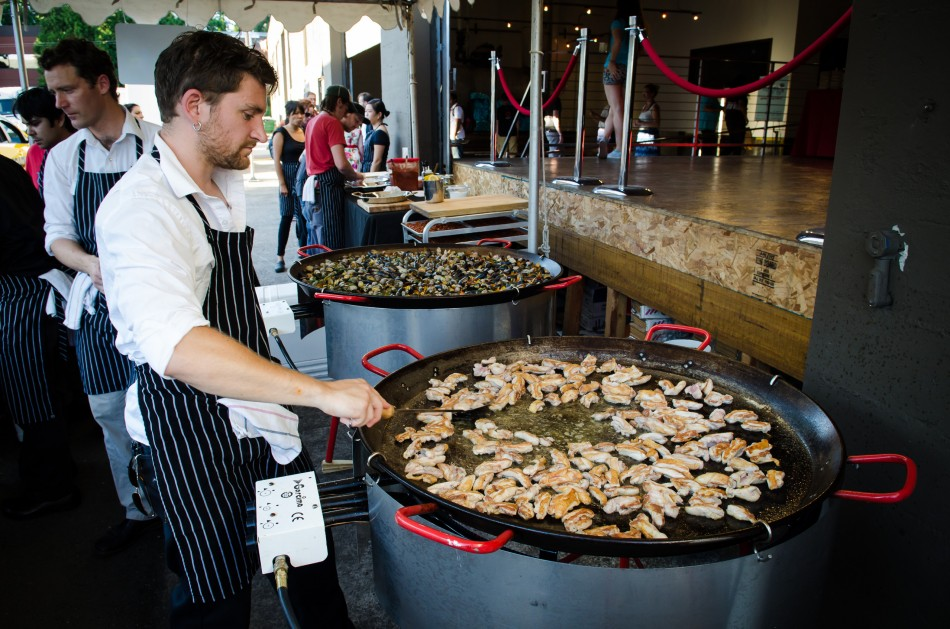Image (C) 2013 Hockley Photography.
Is OpenStack Sustainable?
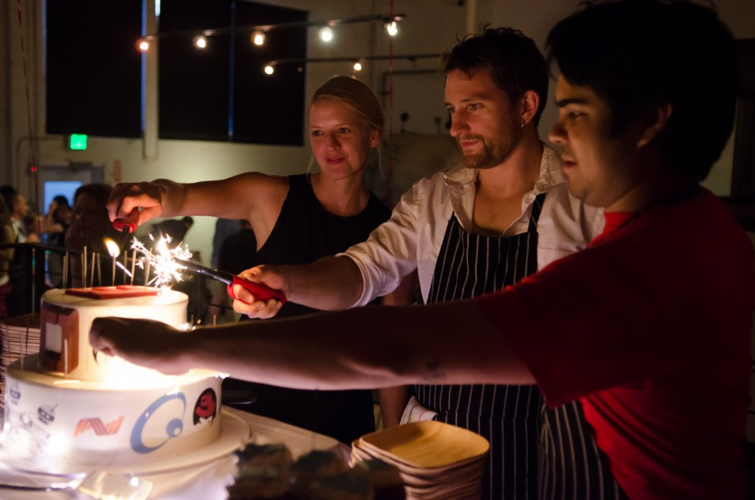Image (C) 2013 Hockley Photography.
Is OpenStack Sustainable?
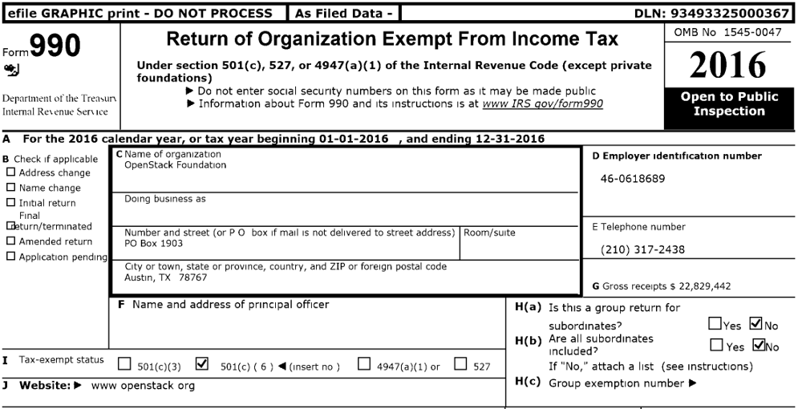Image (C) 2013 Hockley Photography.
Is OpenStack Sustainable?
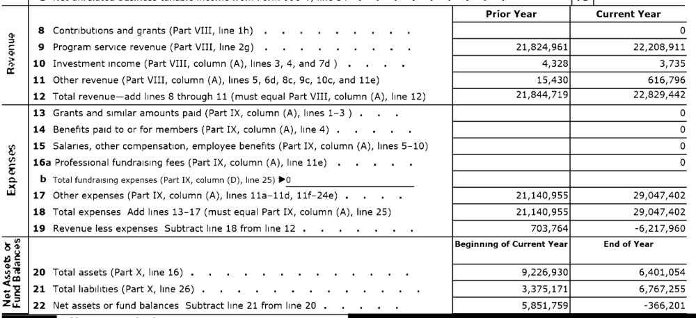Is OpenStack Sustainable?
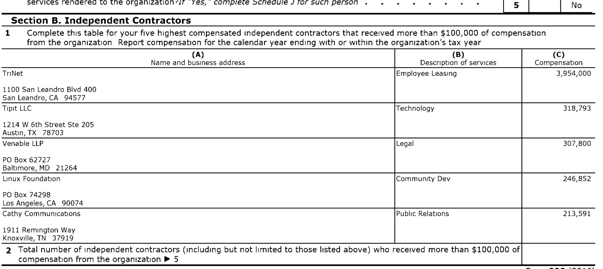Is OpenStack Sustainable?
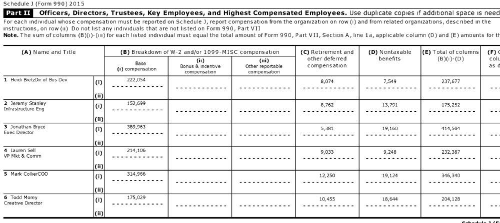One Little Number Matters A Lot
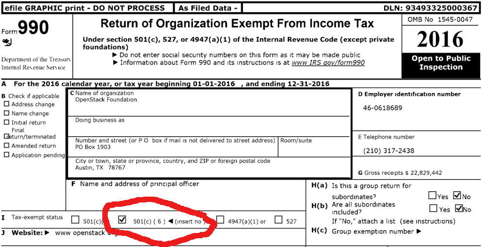501(c)(6)
Section 501(c)(6) of the Internal Revenue Code provides for the exemption of business leagues … [it] is an association of persons having some common business interest, the purpose of which is to promote such common interest. Trade associations and professional associations are business leagues.
501(c)(3)
Organizations described in section 501(c)(3) are commonly referred to as charitable organizations. … The organization must not be organized or operated for the benefit of private interests [and are] establishments that advocate and actively promote causes and beliefs for the public good;
Slash And Burn “Works” But Is Not Sustainable
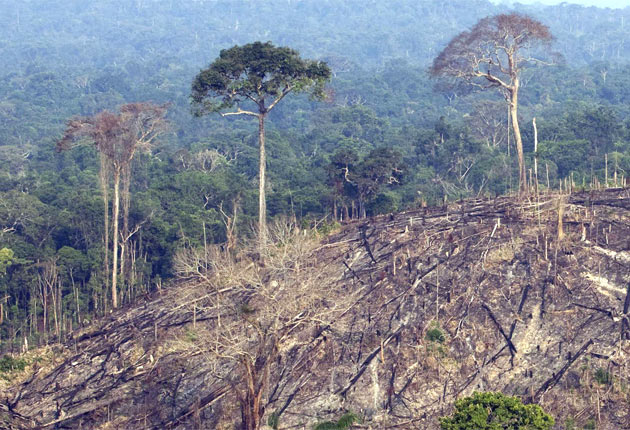phpMyAdmin
phpMyAdmin
- started in Fall 1998
- became a Conservancy member in Summer 2013
phpMyAdmin Income & Development Expenses
- 2013: Donations: $16k, Spent on Development: $0
- 2014: Donations: $29k, Spent on Development: $3k
- 2015: Donations: $49k, Spent on Development: $15k
- 2016: Donations: $126k, Spent on Development: $21k
- 2017: Donations: $76k, Spent on Development: $28k
- 2018: Donations: $87k, Spent on Development: $32k
phpMyAdmin Income & Development Expenses
- phpMyAdmin isn't a jet-setting project
- phpMyAdmin isn't in everyone's favorite language
- phpMyAdmin doesn't have giant parties with all the Fiji water, mojitos, and margaritas you can drink and all the food you can eat.
- phpMyAdmin doesn't pay developers $500k.
- phpMyAdmin is a sustainable FOSS project
SPOILER ALERT!
I know it's not March, not December, but may I briefly analogize to the 1945 film, It's a Wonderful Life (spoilers included, but you've probably seen this movie already)
George Bailey
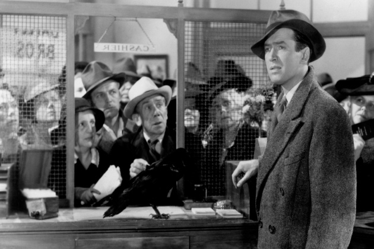We Have Our Mr. Potters
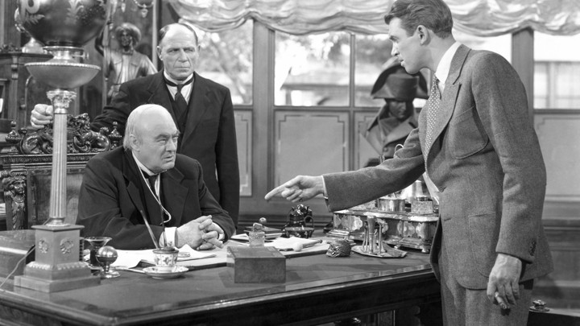But a Lot More Sam Wainrights
But Wainrights Whom We Don't Actually Need
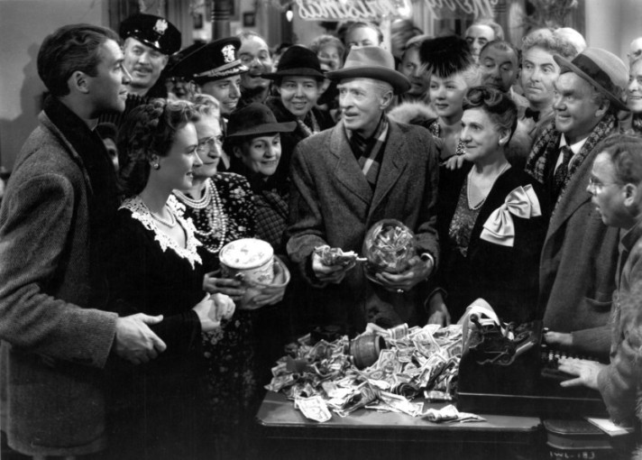FOSS Projects as Small Towns
The analogy isn't perfect by any means.
It's a movie and a morality tale.
But most FOSS projects aren't massive, they're community projects that are much like a small town.
And those small towns need George Baileys the most.
More Info / Talk License

URLs / Social Networking / Email:
- Pls. support Conservancy
- The Copyleft Guide is freely available & welcomes contributions at copyleft.org
- Conservancy: sfconservancy.org & @conservancy.
Presentation and slides are: Copyright © 2017, 2018, 2019 Bradley M. Kuhn, and are licensed under the Creative Commons Attribution-Share Alike 4.0 International License. Slide Source available.
Some images included herein are ©’ed by others. I believe my use of those images is fair use under USA © law. However, I suggest you remove such images if you redistribute these slides under CC-By-SA 4.0.